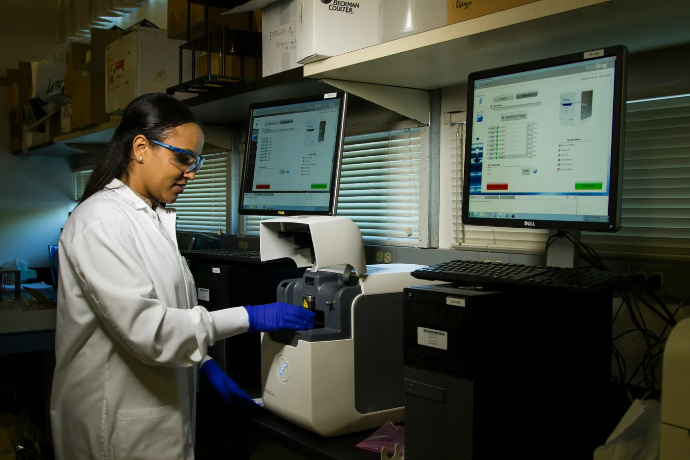
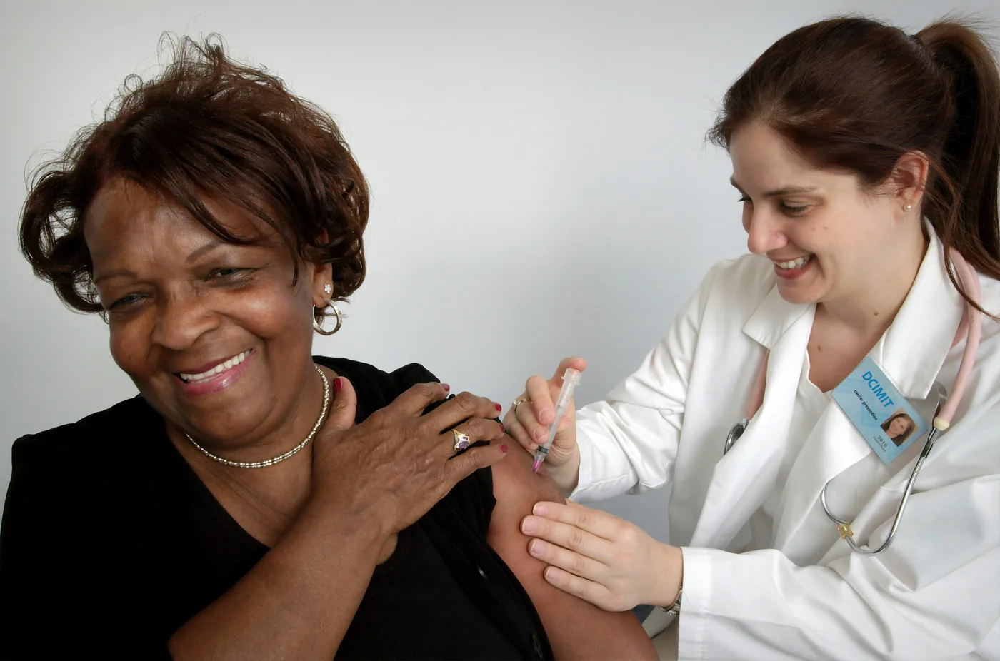

Prévention et dépistage précoce du cancer du col de l'utérus chez les immigrés en Italie
Comprendre et réduire les inégalités de santé entre les communautés immigrées et les Italiens de naissance afin d'améliorer la prévention du cancer du col de l'utérus et les résultats du dépistage.
Centres cliniques
+
Participants au questionnaire
Entretiens qualitatifs
2010 - 2010
Données du registre national couvertes
Veuillez sélectionner l'option qui décrit le mieux la raison de votre visite
Choisissez l'option la plus adaptée pour accéder à la section du site qui vous est la plus utile.
Pour les femmes
DCIMIT propose des informations accessibles pour vous aider à comprendre la prévention du cancer du col de l'utérus, les options de dépistage et le moment de consulter un médecin
Pour les chercheurs
L'objectif du projet DCIMIT est de produire des données probantes pour éclairer des stratégies de dépistage plus équitables et adaptées aux cultures
Le défi
Le cancer du col de l'utérus est hautement évitable grâce à un dépistage régulier, mais d'importantes disparités existent dans le recours au dépistage et dans les résultats de santé entre les populations immigrées et les populations italiennes d'origine.
Les données systématiques sur ces disparités entre groupes d'immigrés et entre régions restent limitées. Le projet DCIMIT vise à apporter des données probantes pouvant éclairer la conception d'interventions adaptées aux cultures.


Impact attendu
Les inégalités de santé dans la prévention du cancer du col de l'utérus peuvent être influencées par des différences d'accès aux soins, d'information en santé, de langue et de situation socio-économique. Ces facteurs peuvent affecter la participation au dépistage ainsi que l'accès à des informations et à des soins appropriés.
DCIMIT étudie ces inégalités parmi les populations migrantes en Italie, dans le but de mieux comprendre les obstacles qui peuvent contribuer aux différences en matière de prévention et de dépistage précoce du cancer du col de l'utérus.
En produisant des données probantes sur ces obstacles et en identifiant des pistes pour améliorer l'accès au dépistage et aux informations de santé pertinentes, le projet cherche à contribuer à l'élaboration d'approches plus équitables de la prévention et du dépistage précoce du cancer du col de l'utérus.
Objectifs de la recherche
Une approche systématique pour comprendre et réduire les disparités liées au cancer du col de l'utérus
Comprendre les expériences
Identifier les déterminants qui influencent le dépistage précoce et l'accès aux soins chez les femmes immigrées au moyen de questionnaires (300 participantes) et d'entretiens approfondis (60 femmes) dans 10 centres cliniques.
- Première étape
Analyser les données de population
Comparer l'incidence, la mortalité et la survie du cancer du col de l'utérus entre les femmes immigrées et les femmes nées en Italie à partir des données des registres nationaux des cancers (2010-2022), en collaboration avec l'AIRTUM.
- Deuxième étape
Tester les interventions
Évaluer l'efficacité de programmes éducatifs adaptés aux cultures pour accroître la participation au dépistage du col de l'utérus chez 205 femmes immigrées à Rome, par rapport à un groupe témoin à Milan.
- Étape finale